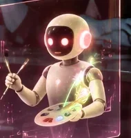

Máte nápad na aplikaci?
Postavte ji s námi.
Napsat aplikaci s pomocí AI dnes zvládne i člověk, který nikdy neprogramoval. Udělat ji správně, tedy bezpečně, srozumitelně a tak, aby fungovala i za půl roku, je ale jiná disciplína. V inkubátoru stavíte svou aplikaci sami se svým AI pomocníkem a kolem vás pracuje tým AI agentů, kteří radí, kontrolují a testují. Vy rozhodujete, oni hlídají kvalitu.
Aplikace z AI se rychle napíše. A stejně rychle pokazí.
AI pomocník napíše kód během pár minut. Kde chybí zkušený tým, který by se na něj podíval, se ale opakují stejné problémy. Tohle jsme viděli nejčastěji.
Funguje jen na ukázce
Na prvním předvedení všechno běží. Pak přijde neobvyklé datum nebo příliš velké číslo a aplikace spadne.
tester aplikaci skutečně proklikne na mobilu i počítači a ke každé chybě napíše test, aby se nevrátila.
Uživatel vidí cizí data
Nejhorší chyba, jaká se může stát, a v kódu z AI překvapivě častá. Většinou si jí nikdo nevšimne, dokud to není pozdě.
agent pro bezpečnost a soukromí kontroluje každou změnu a testy ověřují, že nikdo neuvidí cizí záznamy.
Věcně to nesedí
Výpočty, rady a texty v aplikaci vypadají přesvědčivě, ale odborník by se chytal za hlavu.
odborník na obor vaší aplikace hlídá, aby obsah odpovídal tomu, jak to v oboru opravdu je.
Špatně se ovládá
Malá tlačítka, nečitelné barvy, matoucí obrazovky. Uživatelé to po prvním pokusu vzdají.
designérka posoudí každou novou obrazovku, ovládání na mobilu i čitelnost pro hůře vidící.
Nikdo se nedíval podruhé
Kód napsal jeden model a nikdo jiný ho nečetl. Chyby, které autor přehlédne, tam zůstanou.
každou změnu nezávisle posoudí jiný model než ten, který ji napsal.
Za půl roku se v tom nikdo nevyzná
Rozhodnutí, opravy a nápady zůstaly v desítkách konverzací s AI, které už nikdo nenajde.
všechno se ukládá do sdílené paměti, takže agenti i vy víte, proč je co udělané tak, jak je.
Každá funkce projde stejnou cestou.
Nemusíte vědět, jak se aplikace správně vyvíjejí. Inkubátor vás tou cestou provede a na každém kroku víte, kde funkce je a co je potřeba rozhodnout.
Napíšete pár vět svými slovy. Průvodce z nich udělá jasné zadání a dopíše, podle čeho poznáte, že je hotovo.
Odborník a designérka doplní, co má funkce věcně splňovat a jak má vypadat.
Funkci staví váš AI pomocník ve vašem tempu a vysvětluje, co dělá a proč.
Změnu projdou agenti: testy, bezpečnost, druhý názor, vzhled i odbornost.
Funkce jde ven. Nikdo vám ji nezablokuje, doporučení počkají na další verzi.
Jako zkušený vývojový tým. Jen z AI agentů.
Agenti jen radí a kontrolují, nic nenařizují. Kód mění váš AI pomocník a o všem rozhodujete vy. Výjimkou je tester, který smí doplnit chybějící testy. Každý nález vám agenti vysvětlí lidsky: co je špatně, proč to vadí a jak to opravit. Učíte se tak za pochodu.
Tým inkubátoru
šest rolí, každá hlídá něco jinéhoPrůvodce provede nápad celou cestou a po každé kontrole sepíše shrnutí. Odborník hlídá věcnou správnost podle oboru vaší aplikace, ať je to výživa, účetnictví nebo právo. Designérka se stará o vzhled a ovládání, vývojář-oponent přináší druhý názor od jiného modelu, agent pro bezpečnost chrání data uživatelů a tester aplikaci opravdu vyzkouší.

Designérkavzhled a ovládáníVšechno, co by vám dal zkušený tým
Po každé kontrole dostanete Kartu funkce: jedno přehledné shrnutí toho, co agenti zjistili, doporučení seřazená podle důležitosti a hotový pokyn pro vašeho AI pomocníka, co zlepšit. Stejný problém se nikdy neopakuje dvakrát, jen se doplní.
Automatické testy
Při každé změně se aplikace sama otestuje. Když něco rozbijete, víte to hned, ne až od uživatelů.
Vlastní přehled
Jedna stránka, kde vidíte rozpracované funkce, co našli agenti, co jste odložili na později a které verze běží.
Chat a týdenní shrnutí
Kteréhokoli agenta se zeptáte kdykoli, i z mobilu. Každou neděli večer přijde e-mail, co se za týden povedlo a co dál.
Sdílená paměť
Zadání, rozhodnutí a nálezy se ukládají, takže agenti navazují tam, kde se skončilo, a neopakují stejné rady.
Vydání a zálohy
Nová verze jedním příkazem: kontroly, záloha databáze, nasazení a ověření, že aplikace opravdu běží.
Soukromí
Aplikace i agenti běží u vás nebo na našem serveru v Česku. Hesla jsou v trezoru, ne v kódu.
Pomůžeme ji bezpečně dostat ven.
Hotová aplikace potřebuje vlastní adresu a bezpečné spojení. I s tím vám pomůžeme: poradíme s výběrem a rezervací domény, postaráme se o její nastavení, o veřejný certifikát, který se sám včas obnovuje, a o samotné zveřejnění. Když to dává smysl, aplikaci napojíme přes Cloudflare, který ji schová za svou ochranu proti útokům a přetížení.
Výběr a rezervace domény
Pomůžeme najít dobré jméno, ověřit, že je volné, a doménu zarezervovat na vás.
Nastavení domény
Záznamy, které vedou návštěvníky na vaši aplikaci, nastavíme a ohlídáme za vás.
Veřejný certifikát
Zabezpečené spojení (zámek v prohlížeči) s automatickou obnovou, aby nikdy nevypršelo.
Bezpečné zveřejnění
Aplikaci zveřejníme přes chráněnou vstupní bránu, případně přes Cloudflare.
První aplikace v inkubátoru
Fitness aplikaci pro mobil i počítač staví autorka bez programátorské praxe se svým AI pomocníkem. Tým agentů hned první den napsal chybějící testy, aplikaci proklikal na mobilu, ověřil, že žádná uživatelka nevidí cizí data, a našel tři skutečné chyby dřív, než na ně narazil kdokoli z uživatelů.
Celý vývojový tým na malém počítači s 8 GB.
Tým agentů, automatické testy i váš AI pomocník běží na malém tichém počítači s 8 GB paměti a úsporným čtyřjádrovým procesorem. Přemýšlení obstarávají špičkové modely v cloudu (Claude, ChatGPT), u vás běží jen to, co je potřeba: práce s kódem, testy a databáze pro zkoušky. Stačí starší kancelářské PC, které máte v šuplíku. Všechno ostatní je open source, bez poplatků za licence.
Čtyři kroky k vaší první funkci.
Máte nápad? Pojďte ho postavit s námi.
Napište nám pár vět o své aplikaci. Ozveme se s návrhem, jak začít.
info@agentera.cz